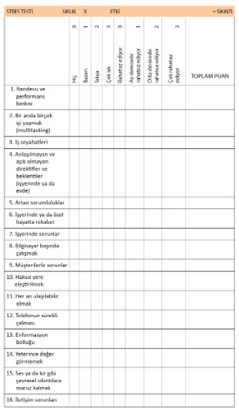

Vata Stres Yönetimi

Vata, Ayurveda tıbbı beden tiplemelerinden alınmış bir kavramdır. Hindistan kökenli tıbbi bir sistem olan Ayurveda Türkçeye “uzun yaşam bilgisi” olarak çevrilebilir. Ayurveda, insanları beden tiplerine göre üçe ayırır: “Vata”, “Pitta” ve “Kapha.” Bu tipler insanların biyolojik, kimyasal ve psikolojik özellikleri göz önünde bulundurularak geliştirilmiştir. Ancak söz konusu olan bir tipoloji olmasına rağmen kişilerin öznelliği ön plandadır. Dolayısıyla Ayurveda’da standart ve herkes için doğru olan değil, kişiye özel bir uygulama geliştirilir. Kişinin öznelliğinin ön planda tutulması gerçeğinden yola çıkılarak hem Berlin’deki akademiye hem de orada geliştirdiğimiz yöntemlere Vata adını vermeyi uygun bulduk.
Bir önceki bölümde stresin günümüz dünyasında hayatımızı nasıl belirlediğini ve şişmanlığın yanı sıra pek çok fiziksel ve psikolojik rahatsızlığa yol açtığını gördünüz. Berlin Vata Akademisi’nde geliştirdiğimiz Vata Stres Yönetimiyle amacımız insanlara stresle uzun vadeli başa çıkma stratejileri sunarak, yaşam biçimlerini değiştirmelerini ve dönüştürmelerini sağlamaktır.
Stresle başa çıkmak demek kişinin dışsal ve içsel beklentilerini karşılayabilmek ve bunu yaparken de sağlıklı kalmasını sağlamaktır. Bunun da tek yolu kişisel yeti ve güç kaynaklarının harekete geçirilmesidir. Bunların harekete geçirilmesiyle kişi bir taraftan stres yaratan dışsal faktörlere, bir taraftan da kendi bedensel ve duygusal tepkilerine müdahale eder.
Stresle başa çıkma konusunda iki yöntem vardır. Bunlardan biri kısa vadeli, diğeriyse uzun vadelidir. Stresle kısa vadeli başa çıkma yöntemleri geçici olarak rahatlama sağlar. Burada müdahale, ortaya çıkan stres tepkisine yapılır ve amaç, kişiyi olumsuz bedensel ve ruhsal durumdan çıkarıp sorunun büyümesine engel olmaktır.
Uzun vadeli başa çıkma yöntemlerindeyse amaç, stresin kaynağına müdahale etmektir. Bu durumda ya strese yol açan durum ya da kişinin kendisi kalıcı bir değişim sürecine girer. Bazı durumlardaysa her iki boyutta da değişimler yapmak gerekebilir. Yani burada hedef, durumu kişiye tahammül edilebilir hale getirmek değil, değiştirmek ve dönüştürmektir.
Üç müdahale noktası
Stres sürecinin üç öğeden oluştuğunu söyleyebiliriz:
1. Stres kaynağının kendisi: Stres kaynağının kendisi dış dünyada cereyan eden olaydır. Ve günümüzde bizi strese sokan onlarca, hatta yüzlerce stres uyarıcısı var. Tabii ki bunların hepsini hayatımızdan çıkarmamız mümkün değil. Ama buna rağmen kronik streste olan biri, dış dünyadaki stres kaynağını yok edip edemeyeceğini kendine sormalıdır. Gerçekten bu kadar fazla çalışmak zorunda mı? Acaba işlerini biraz azaltması gerçekten de korktuğu felaketlere yol açacak mı? Ya da belki de bütün bunları tartışırken, işinden ayrılmaya karar verip, kendisine daha az yorucu bir iş bulacaktır. İşle örneklediğim bu durumu günlük hayatımızda bizi strese sokan bütün uyarıcılara karşı uygulayabiliriz.
Uyarıcıyla ilgili kendinize şu soruları sorabilirsiniz: Bu uyarıcıyı hayatımdan tamamıyla çıkarmam mümkün mü? Değilse, bu uyarıcıyla karşılaşmalarımı en aza indirmek için ne yapabilirim?
2. Kendimize müdahale etmek: Ancak günümüzde bizde kronik stres sendromuna yol açan dışsal faktörlerin birçoğuna müdahale edemiyoruz. Maddi sıkıntılardan dolayı evliliği sürdürmek, hayatta kalabilmek için asgari ücret karşılığında çalışmak, despot bir işverene ya da yöneticiye katlanmak, aşırı rekabet yüzünden devamlı büyümek zorunda kalmak, aynı anda yönetici, anne ve eş olmak ve ciddi bir hastalığa yakalanmak gibi olaylara müdahale etme şansımız yok denecek kadar azdır.
Ancak bir olayın bizim üzerimizde yarattığı etki yalnızca olayın kendisine değil, aynı zamanda da bize bağlıdır. İşte bu yüzden aynı olay, bir insanda stres tepkisine neden olurken, bir başkasının motivasyonunu yükseltebilir. Dolayısıyla kişinin olayı nasıl değerlendirdiği, ne tür yetilere ve güç kaynaklarına sahip olduğu, hayata ve kendisine karşı nasıl bir tutum sergilediği verilen tepkiyi belirleyen çok önemli faktörlerdir. Yani eğer dış faktörlere müdahale etme imkânımız yoksa, kendimize müdahale edip değişimi kendimizde sağlayabiliriz.
Somutlaştırırsak; sevmediği bir insanla evli olan ve bu evliliği maddi ve manevi sebepler yüzünden bitiremeyen biri, içinde bulunduğu “hayata karşı şikâyetçi olmak” durumuna müdahale edebilir. Bu da evliliğinin olumlu yönlerine odaklanması, hayatı olduğu gibi kabullenmesi, kendisine bazı hobiler bulması, belki de içinde bulunduğu mükemmeliyetçilikle mücadele etmesi anlamına gelir. İnsanın kendine müdahale etmesi kişisel gelişim ve olgunlaşma adına da son derece önemlidir. Bu tarz müdahaleler uzun vadede insanın dünyaya bakışını ve enerjisini değiştireceği gibi dış uyarıcının da değişmesini sağlayacaktır.
3. Stres tepkisine müdahale etmek: Stres durumunda üçüncü müdahale noktasını ise stres tepkisi teşkil eder. Ne strese yol açan dış faktörlere ne de kendisine müdahale edebilen biri, kaçınılmaz bir şekilde stres tepkisine girecektir. Burada söz konusu olan müdahaleler, insanın geçici olarak rahatlamasını sağlar, yani kısa vadeli başa çıkma stratejileridir. Kısa vadeli başa çıkma stratejilerinin amacı, kişiyi içine girdiği olumsuz durumdan çıkarıp sorunun büyümesine engel olmaktır.
Vata Stres Yönetimi size stresin ve bilgi kirliliğinin en üst seviyede yaşandığı günümüz dünyasında kendi yolunuzu bulmanız konusunda yol göstermek amacıyla geliştirilmiştir. Vata Prensibi’nin hedefi, beynin stres sistemini tekrar optimal düzeyde çalıştırmaktır.
Stres sisteminin optimal çalışmasını sağlamak, A grubundakilerin daha az hastalanmasını, B grubundakilerinin ise sağlıklı bir şekilde incelmelerini sağlayacaktır. Kitabın bundan sonraki bölümlerinde Vata Stres Yönetimi çerçevesinde geliştirilmiş stresle uzun vadeli başa çıkma stratejileriyle ilgili birçok alıştırma göreceksiniz. Uzun vadeli başa çıkma stratejilerinde hedef hem var olan ortamda hem de kişinin kendisinde kalıcı değişimler yaratarak, onu strese karşı dayanıklı hale getirmektir.
Lütfen bu alıştırmaları yapmakta aceleci davranmayın. Her hafta bir alıştırma yapmanız ve alıştırmalardaki tutumu gündelik hayatınıza aktarmanız çok daha önemlidir. Ayrıca bu alıştırmaları bir grup içinde ve mümkünse bir psikologla yapmanız çok daha verimli olacaktır.
Alıştırmalara başlamadan önce lütfen size sunacağımız testle kendi stres seviyenizi belirleyin.
Vata Stres Yönetimi programını başarıyla uyguladıktan sonra aynı testi tekrar yapın. Böylece başarınızı somut bir şekilde görebileceksiniz.
Vata Stres Yönetimi kapsamında uygulanan stresle başa çıkma stratejileri altı ana bölümden oluşur:
Farkındalık, problem çözme, kişisel tutumu değiştirme, sıkıntıyı dengeleme, sosyal destek ve sağlık psikolojisi. Stresle uzun vadeli başa çıkmak isteyenler, bu program kapsamında bütün ana bölümler hakkında bilgi ve yöntemler edinecekler.
Şimdi lütfen aşağıdaki stres testini doldurun. Testte yer alan her soru için önce bu durumu ne sıklıkta yaşadığınızı, sonra da bunun sizi ne derece etkilediğini işaretleyin.
Testi tamamen doldurduktan sonra işaretlediğiniz sıklık ve etkiyi çarparak bu durumun sizin için ne derece sıkıntılı olduğunu bulun.
Örneğin, randevu ve performans baskısı sorusunun sıklık bölümünde çok sık (3) karesini, etki bölümündeyse orta derecede rahatsız ediyor (2) karesini işaretlediyseniz, bu durumun sizde yarattığı sıkıntının puanı toplam olarak 6’dır (3x2). Bu durumda toplam puan yazılı kareye 6 yazmalısınız. Lütfen bu işlemi testte işaretlediğiniz bütün durumlar için yapın ve sonunda da aldığınız puanları toplayıp toplam puanınızı ortaya çıkarın.
Son olarak da aldığınız toplam puanınızı işaretlediğiniz durumların adedine bölüp sonucu elde edebilirsiniz. Örneğin testten toplamda 38 puan aldıysanız ve bu puanlar işaretlediğiniz 10 tane durumdan kaynaklanıyorsa, o zaman sizin test sonucunuz 3,8’dir (38/10).

Değerlendirme
Eğer herhangi bir soruda toplamda 4 ya da 6 puan aldıysanız lütfen bu konuyu kendiniz için yakından analiz edin. Bir bakın bakalım strese yol açan bu durumu hayatınızda zaman zaman azaltabiliyor musunuz? Ya da tamamen yok edebiliyor musunuz? Bu durumla başa çıkmak için bugüne kadar bütün yolları denediniz mi? Acaba denemediğiniz herhangi bir yol kaldı mı? Her yolu deneyip de bu stresi hayatınızdan çıkaramadıysanız belki de tutumunuzu değiştirmeniz daha faydalı olabilir.
Bu durumda da kendinize şu soruları sorabilirsiniz:
Söz konusu olan durum gerçekten de tahammül edilemez boyutta mı? Bu duruma daha az dramatik bir bakış açısıyla yaklaşabilir misiniz? Sizin hangi kişisel özelliğiniz bu durumu zorlaştırıyor?
Puanlandırma
 1,5’a kadar
1,5’a kadar

Eğer aldığınız toplam puan 1,5 ya da altındaysa o zaman durumunuz oldukça iyi diyebiliriz. Bu sizin var olan hayat şartlarıyla iyi ve yapıcı bir şekilde başa çıktığınızı gösterir. Kendinizi strese karşı dayanıklı hissediyor ve hayata iyimser yaklaşıyorsunuz. Başkalarının yoğun stres yaşadıkları durumlarda sakin kalmayı beceriyor, önemli ile önemsizi ayırt edebiliyor ve neyi değiştirebileceğinizi ve neyi değiştiremeyeceğinizi biliyorsunuz.
Hayatınızı şimdiye kadar nasıl sürdürdüyseniz, aynı şekilde sürdürmeye devam edebilirsiniz. Yine de isterseniz zaman zaman stresle başa çıkma stratejileriniz üzerine düşünüp, onları daha da yaratıcı bir hale getirebilirsiniz. Böylelikle daha fazla esneklik kazanacak ve öngörülemeyen stresli durumlarla da kolayca başa çıkabileceksiniz.
1,6-2,9 arası

Puanınız 1,6 ile 2,9 arasındaysa bu, stresin sizin hayatınızı etkilemesine rağmen hayatınıza hükmetmediği, yani gündelik hayatın zorluklarıyla iyi bir şekilde başa çıktığınız anlamına gelir. Ancak yine de stresle daha iyi bir şekilde başa çıkmayı öğrenebilirsiniz: Acaba stresle başa çıktığınız durumlar ile çıkamadığınız durumlar arasındaki temel farklar nelerdir? Neyi farklı yapıyorsunuz? Belki de başa çıktığınız durumlarda henüz bilincinde olmadığınız stratejiler uyguluyorsunuzdur. Lütfen bu stratejilerinizin bilincine varın ve bunları diğer durumlarda da kullanın. Ayrıca hayatınızın hareketli geçtiği dönemlerde kendinize zaman ayırın ve kendinizi şımartın. Her gün enerji deponuzu doldurmak için bir şeyler yapın. Sabahları ya da akşamları kısa bir yürüyüşe çıkmak, meditasyon yapmak ya da sizi dinlendiren bir hobi edinmek sizi dengeleyecektir.
 3,0-4,5 arası
3,0-4,5 arası

Bu puanlar arasında olmak yüksek stres altında olduğunuzu ve hayatınızda bazı değişimler yapma vaktinin geldiğini gösterir. Muhtemelen yıllarca süren kronik sıkıntılar ve zaman zaman yaşadığınız günlük olaylar sizin gerilim seviyenizi yükseltiyor. Dolayısıyla çok daha çabuk sinirleniyor ve kaygılanıyorsunuz. Bu durum performansınızı da olumsuz etkiliyor ve veriminiz düşüyor. Belki de yaptığınız işlerde daha çok yanlış yapıyor ve yaratıcılık enerjinizi daha az kullanıyorsunuz. Aynı zamanda dinlenme konusunda da zorluklar yaşıyor ve düşüncelerinizi durduramıyorsunuz. Bütün bu sıralananlar yoğun stres yaşayan pek çok insanda gözlemlenmektedir.
Lütfen önce sizde yoğun strese yol açan durumları yakından inceleyin. Sizi strese sokan durumlar fazla mı, yoksa az sayıda durum sizi fazla mı strese sokuyor? Strese yol açan durumlardan hangisini azaltabilir ya da hayatınızdan çıkarabilirsiniz?
Yukarıdaki öneri ve soruların yanı sıra aşağıdaki sorular da size yardımcı olabilir: Acaba sizde bugün sıkıntı yaratan bazı durumlar geçmişte sıkıntı yaratmamış olabilir mi? Aynı durumu geçmişte nispeten rahat karşılarken, şimdi neden karşılayamıyorsunuz? Değişen nedir? Acaba geçmişe kıyasla artık daha mı sabırsız ya da dağınıksınız? Eğer bu sorulara evet diyorsanız o zaman gündelik hayatınıza daha fazla molalar ve olumlu ritüeller koymak işinize yarayacaktır. Yaşadığınız öfke ve kaygılara daha fazla bedensel aktiviteyle karşılık verin. Burada önemli olan kendinizi herhangi bir spora zorlamamanız. Hedef, sizi daha fazla strese sokmak değil, stresinizi azaltmaktır. Dans, yürüyüş, yoga ya da hoşunuza gidecek herhangi bir aktivite yapabilirsiniz. Ayrıca strese girdiğiniz durumlarda sizde olumsuz duygulara yol açan düşüncelerinizi de gözden geçirebilir ve onlara müdahale edebilirsiniz. Mesela bir ortamda “bu durum beni öldürecek” diye düşünüyorsanız, bu düşünce sizi son derece gerecektir. Bu noktada kendinize düşüncenizin ne derece gerçekçi olduğunu sorabilir ve kendinizi yatıştırabilirsiniz.
 4,5 üstü
4,5 üstü

Eğer aldığınız toplam puan 4,5’in üzerindeyse bu, durumunuzun son derece ciddi olduğu gösterir ve sizin çok sık ve yoğun stres yaşadığınız anlamına gelir. Kendinizi çoğunlukla iyi hissetmiyor ve gündelik hayatın zorunluluklarından yoruluyorsunuz. Kendinize zaman ayıramıyor, ayırdığınızdaysa tadını çıkaramıyorsunuz. Ve belki de bundan dolayı alkol ya da benzeri maddeler tüketerek kendinizi rahatlatmaya çalışıyorsunuz.
A grubu insanıysanız yaşadığınız stres sizde baş ağrısına, uyku sorunlarına ve sıkça enfeksiyon kapmaya, B grubundaysanız da kilo almaya yol açabilir. Yaşadığınız bütün bu sıkıntılar hayatınızda acilen bir şeyler değiştirmek zorunda olduğunuzu gösteriyor.
Yoğun stres yaşayan insanların profesyonel yardım almadan bu sorunu çözmeleri neredeyse imkânsızdır. Çünkü stresle başa çıkmak demek, strese yol açan durumları, yaşam biçiminizi, hayata ve kendinize karşı olan tutumunuzu değiştirmeniz anlamına gelir. Bu denli yoğun stres yaşayanların, psikolojik ve fiziksel sağlıklarını kurtarmak ve korumak için mutlaka bir uzmanla çalışmaları gerekmektedir.
Ayrıca bu gruba giren insanların yaşadıkları stres yalnızca onlara değil, aynı zamanda da sosyal çevrelerine, ailelerine, çocuklarına ve dolayısıyla da bütün topluma zarar verir.
Lütfen, sizi strese sokan durumları yakından inceleyin ve bunlarla nasıl başa çıkacağınızı düşünün!